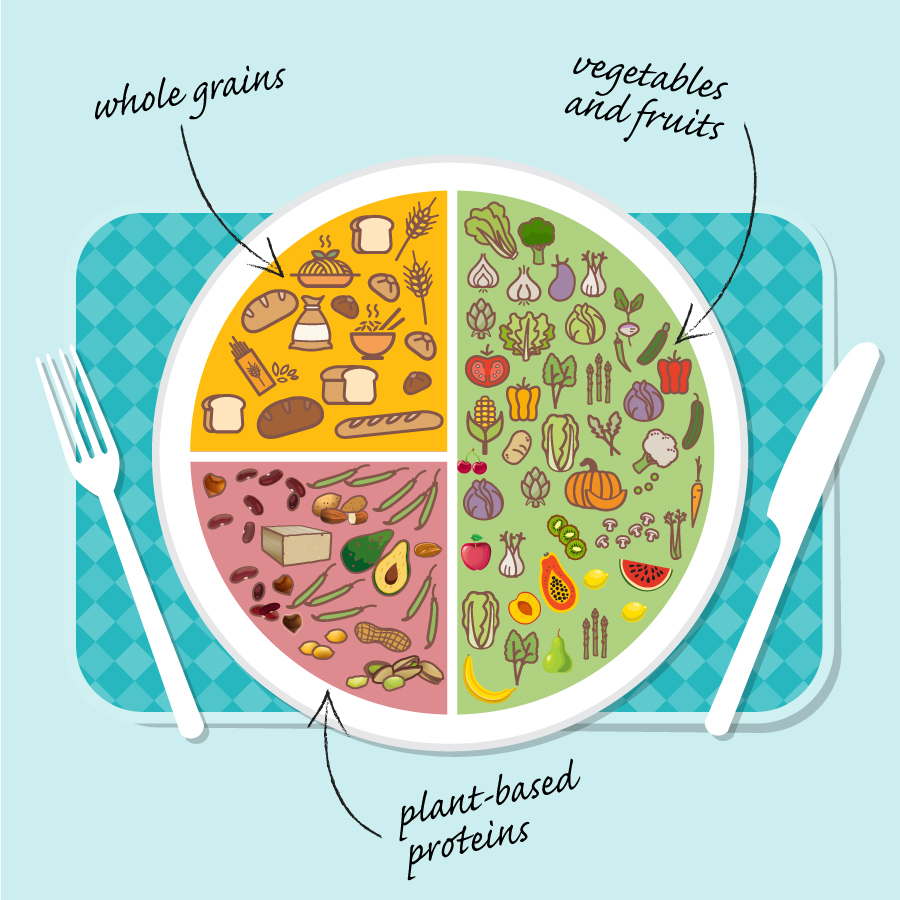

How to start planning
plant-based meals?
July 13 2021,
Jelena Cvetković Š.
PLANT-BASED. It's nothing difficult. It only takes a little organization and familiarity with the possibilities of this type of diet. Don’t be afraid to experiment in the kitchen.
When preparing plant-based meals, our goal is not only to make them delicious, but also to enriched them with essential nutrients such as vitamins and minerals. It is also necessary to pay attention to the fact that the dishes are rich in fibre and other useful plant nutrients, that the dishes are not too greasy, sweet or salty and that they do not leave us with an empty stomach.
What to pay attention to?
Each meal gives us an energy value (calories) that needs to be adjusted to the level of activity of each individual. Everyone knows and feels for themselves how much food do they need. It is important that the meals are filling and full of energy. Each main meal should contain the following:
Green vegetables (preferably fresh):
broccoli, mangold, beans, peas (can also be from the freezer), spinach, zucchini, celery, etc.
Quantity: at least one cup per person.
Red, orange, yellow vegetables (preferably fresh):
carrots, pumpkins (also yellow), corn, tomatoes, sweet potatoes, etc.
Quantity: at least one cup per person.
Note: You can also increase your vegetable intake by eating a salad with the main course.
Source of plant proteins such as legumes:
(beans, lentils, chickpeas), soy products, nuts / seeds or occasionally foods with highly processed plant-based proteins, e.g. meat substitutes.
Quantity: 1 cup of cooked legumes or 100 g of organic tofu / tempeh or one * vegan burger or 1-2 * vegan sausages (* it is recommended to consume as little food with highly processed plant-based proteins as possible)
Source of complex carbohydrates such as potatoes, rice, pasta / noodles, couscous, bread…
Quantity: depends on how hungry you are and how physically active you are. For inactive people, one cup of rice is enough, while a more active person can eat two or more cups.
For those who are new in a plant-based meals, you can use the following meal view as a good start:
- ½ of plate: vegetables and fruits
- ¼ of plate: whole grains
- ¼ of plate: plant-based proteins

It is very important that the plant diet is complete. This means eating legumes, whole grains, fruits and vegetables, nuts and seeds regularly. We can say that such a diet is healthy. It is not enough just not to eat meat and stay on fast, fatty and fried foods. In any case, it is necessary to combine different foods and take care of the intake of a variety of nutritious whole foods.
More diverse cuisine
The vegan diet is not only to remove meat from the menu, but it is also necessary to put some new foods in your menu. Be open for new dishes and try different cuisines. You will surely find some interesting things that will help you to enrich your meals. This will make the meals more varied.
In any case, you can use:
- various vegetables (including algae, sprouts, bamboo tops ...),
- herbs and spices - fresh or dried (basil, oregano, coriander, garlic, ginger, chili, pepper)
- fruit or squeezed juices
- herbal drinks (almond, oat, organic soy drink,),
- oils (sesame, flaxseed and olive oil - can be used for salads, but not suitable for cooking and frying)
What is good to avoid or at least reduce?
Highly processed foods have a variety of additives that are not part of a healthy diet. Such foods and drinks have an excess sodium, sugar or saturated fats. Excessive consumption of these ingredients can increase the risk of chronic diseases.
Sodium
A higher sodium intake can lead to high blood pressure, which may lead to heart disease. Sodium is often added to foods to preserve them longer and to enhance the flavour.
Sugars
Intake of foods and drinks with added sugars has been vconnected to an increased risk of type 2 diabetes, overweight and dental caries.
Saturated fats
Replacing foods that contain mostly saturated fats with foods that contain healthy fats can reduce the risk of heart disease.
Not all processed foods contain the above ingredients. Other types of processing may include food preservation and nutrient retention. Such methods are drying, canning and freezing, which can be an integral part of a healthy diet.
Make a healthy choice
Everything we eat every day affects our health. So, choose foods with little or no added sodium, sugar or saturated fat.
By cooking and preparing our meals more often, we can choose the ingredients for ourselves and reduce the consumption of processed food.
Make water your drink of choice. Water intake is essential for health. With that, we maintain the hydration of the body and do not take in extra calories.
In any case, read the ingredients written on the product labels.
Photo credits:
iStockphoto